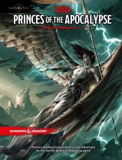

“Princes of the Apocalypse” on the
Shelf of Many Books

Princes of the Apocalypse
D&D 5
(5e)
Year
: 2015
ISBN
: 978-0-7869-6578-6
Princes of the Apocalypse
on Amazon
Princes of the Apocalypse
on Wikipedia
Known monsters from the book:
Aerisi Kalinoth
Air Elemental Myrmidon
Bastian Thermandar
Black Earth Guard
Black Earth Priest
Burrowshark
Crushing Wave Priest
Crushing Wave Reaver
Dark Tide Knight
Drannin Splithelm
Earth Elemental Myrmidon
Elizar Dryflagon
Eternal Flame Guardian
Eternal Flame Priest
Fathomer
Feathergale Knight
Fire Elemental Myrmidon
Flamewrath
Gar Shatterkeel
Ghald
Hellenrae
Howling Hatred Initiate
Howling Hatred Priest
Hurricane
Imix
Marlos Urnrayle
Miraj Vizann
Ogrémoch
Olhydra
One-Eyed Shiver
Oreioth
Razerblast
Sacred Stone Monk
Shoalar Quanderil
Skyweaver
Stonemelder
Thurl Merosska
Vanifer
Water Elemental Myrmidon
Wiggan Nettlebee
Windharrow
Yan-C-Bin